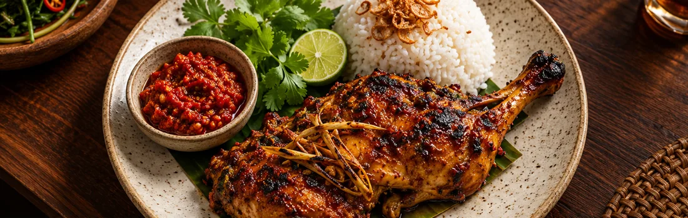

Dapur arang NusantaraDari bara,
Dari bara,
ke meja.
Ayam bakar serai, ikan limau, dan sambal pilihan Anda. Buka buku menu untuk menyusun pesanan meja.
Buka buku menu ↓
Simulasi pemesanan · Data fiktif
Ayam bakar serai, ikan limau, dan sambal pilihan Anda. Buka buku menu untuk menyusun pesanan meja.
Buka buku menu ↓
Simulasi pemesanan · Data fiktif